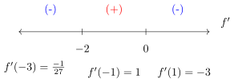
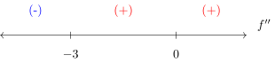
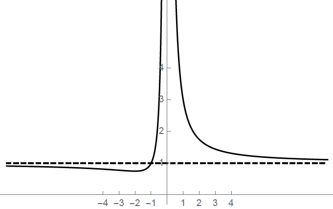

Determine the following information about the given function and then graph the function:
Domain
\(x,y\)-intercepts
Symmetry
Asympotes
Intervals of increasing/decreasing
Maxima/Minima
Intervals of concavity
Inflection points
- (a)
- Domain
The function is a rational function, and so the domain of the function is all real numbers except where the denominator equals zero.
\[ x^2 = 0 \quad \Longrightarrow \quad x=0 \]So the domain of \(f\) is \((-\infty ,0)\cup (0,\infty )\). - (b)
- \(x,\, y\)-intercepts
To find any \(x\)-intercept(s), set \(y=0\) and solve:\begin{align*} \frac {x^2 + x + 1}{x^2} = 0 &\implies x^2 + x + 1 = 0 \\ &\implies x = \frac {-1 \pm \sqrt {1-4(1)(1)}}{2(1)} \end{align*}which has no real solutions. Thus, \(f\) has no \(x\)-intercepts.
Since \(x=0\) is not in the domain of \(f\), \(f\) has no \(y\)-intercepts as well.
- (c)
- Symmetry
Note that \(f(1) = 3\) and \(f(-1) = 1\). So it cannot be for all values of \(x\) that either \(f(-x) = f(x)\) or \(f(-x) = -f(x)\). So \(f\) is neither even nor odd, and therefore \(f\) has no symmetry.
- (d)
- Asymptotes
Vertical Asymptotes: Our only candidate is \(x=0\), and so we compute the two one-sided limits:
\[ \lim _{x \to 0^-} \frac {x^2+x+1}{x^2} = \infty \]\[ \lim _{x \to 0^+} \frac {x^2+x+1}{x^2} = \infty \]Therefore, \(x=0\) is the only vertical asymptote of \(f\).Horizontal Asymptotes: We compute the following limits:
\[ \lim _{x \to \infty } \frac {x^2+x+1}{x^2} = 1 \]\[ \lim _{x \to -\infty } \frac {x^2+x+1}{x^2} = 1 \]we checked both ends and so the only horizontal asymptote of \(f\) is \(y=1\). - (e)
- Increasing/Decreasing
\begin{align*} f'(x) &= \frac {x^2(2x+1) - (x^2+x+1)(2x)}{x^4} \\ &= \frac {2x^3 + x^2 - 2x^3 - 2x^2 - 2x}{x^4} \\ &= \frac {-x^2 - 2x}{x^4} \\ &= \frac {-x-2}{x^3} \end{align*}To find where \(f'\) is positive and where \(f'\) is negative, we need to find where \(f'(x) = 0\) and where \(f'(x)\) does not exist. Clearly, \(f'(x)\) does not exist when \(x=0\). To find when \(f'(x) = 0\), we solve:
\begin{align*} \frac {-x-2}{x^3} = 0 &\implies -x-2 = 0 \\ &\implies -x = 2\\ &\implies x = -2 \end{align*}Since \(x=0\) is not in the domain of \(f\), \(x=-2\) is the only critical point of \(f\). To see where \(f\) is increasing and decreasing, consider the following sign chart for \(f'\):

So we see that \(f\) is increasing on \((-2,0)\), and \(f\) is decreasing on \((-\infty , -2)\) and \((0,\infty )\).
- (f)
- Local Extrema
\(f'\) changes from negative to positive at \(x=-2\), so this is the location of a local minimum. \(f'\) also changes from positive to negative at \(x=0\), but \(f\) is not defined at \(x=0\) and so this is not a local extreme value. \(f\) has a local minimum at \(\left ( -2,\frac {3}{4} \right )\). - (g)
- Concavity \begin{align*} f''(x) &= \frac {x^3(-1) - (-x-2)(3x^2)}{x^6} \\ &= \frac {-x^3 + 3x^3 + 6x^2}{x^6} \\ &= \frac {2x^3 + 6x^2}{x^6} \\ &= \frac {2x+6}{x^4} \\ &= \frac {2(x+3)}{x^4} \end{align*}
To find where \(f''\) is positive and where \(f''\) is negative, we need to find where \(f''(x) = 0\) and where \(f''(x)\) does not exist. Clearly, \(f''(x)\) does not exist when \(x=0\). To find when \(f''(x) = 0\), we solve:
\begin{align*} \frac {2(x+3)}{x^4} = 0 &\implies 2(x+3) = 0\\ &\implies x=-3 \end{align*}The denominator of \(f''\) is always positive so the sign of \(f''\) depends on the numerator. When \(x<-3, f''<0\) and when \(x>-3, f''>0\).
To see where \(f\) is concave up and concave down, consider the following sign chart for \(f''\):

So we see that \(f\) is concave up on \((-3,0)\) and \((0,\infty )\), and \(f\) is concave down on \((-\infty , -3)\).
- (h)
- Inflection Points
\(f''(x)\) changes sign from negative to positive at \(x=-3\) so \(f\) has an inflection point at \(\left ( -3, \frac {7}{9} \right )\) - (i)
- The graph of \(f\)
